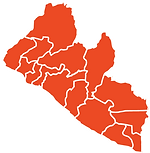
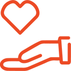

In everything that we do, we seek to generate a positive impact in the lives of children and women in rural communities. It is therefore critically important we measure the results and effects that we have on our beneficiaries. We keep improving our monitoring and evaluation processes every year.
In every Learning Squared program, we seek to understand the level of change and impact that we have created, enabling us to allocate resources to programs with the highest impact and define how to improve that impact on a long and short-term basis. We look at quality-of-life metrics such as poverty and school attainment and access to quality and affordable education.
Why We Measure:
-
Prove. We have an obligation to children and to our donors to prove our impact. We also use impact data to make resource allocation decisions for programs.
-
Learn. We are continually learning and evaluating so we can improve our program to meet our beneficiaries' needs.
-
Improve. Impact data helps us develop a new strategy for improving our programs.
-
Maintain. We use our impact data to maintain the level of our work consistency across all locations.
|  | |||
|
386 Students
Sponsored |
226 Females | 160 Males | 7 Countries |
|  | |||
| 100 Women | 16 Schools | 35 Communities | 28 Volunteers |